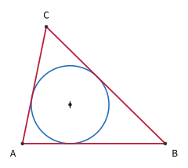
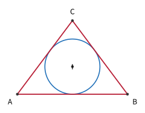
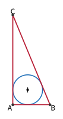

別冊練習問題 9 の解答 内心の位置ベクトル
(1) \(\triangle ABC\) で \(BC=7,\ CA=5,\ AB=6\) とする。内心 \(I\) について \(\overrightarrow{AI}\) を \(\overrightarrow{AB},\ \overrightarrow{AC}\) で表せ。
内心の位置ベクトル
\(BC=7,\ CA=5,\ AB=6\)。角の二等分線の比から：\[\overrightarrow{AI}=\dfrac{7\,\overrightarrow{AA}+6\,\overrightarrow{AB}+5\,\overrightarrow{AC}}{7+5+6}=\dfrac{6\overrightarrow{AB}+5\overrightarrow{AC}}{18}\]

重心との違い
重心は \(\dfrac{\overrightarrow{AB}+\overrightarrow{AC}}{3}\)（係数が等しい）。内心は向かい合う辺の長さが係数。
【答案】
\[\overrightarrow{AI}=\dfrac{5}{18}\overrightarrow{AB}+\dfrac{1}{3}\overrightarrow{AC}\]答
(2) \(\triangle ABC\) で \(BC=5,\ CA=5,\ AB=6\) とする。内心 \(I\) について \(\overrightarrow{AI}\) を \(\overrightarrow{AB},\ \overrightarrow{AC}\) で表せ。
内心の位置ベクトル
\(BC=5,\ CA=5,\ AB=6\)。角の二等分線の比から：\[\overrightarrow{AI}=\dfrac{5\,\overrightarrow{AA}+6\,\overrightarrow{AB}+5\,\overrightarrow{AC}}{5+5+6}=\dfrac{6\overrightarrow{AB}+5\overrightarrow{AC}}{16}\]

重心との違い
重心は \(\dfrac{\overrightarrow{AB}+\overrightarrow{AC}}{3}\)（係数が等しい）。内心は向かい合う辺の長さが係数。
【答案】
\[\overrightarrow{AI}=\dfrac{5}{16}\overrightarrow{AB}+\dfrac{3}{8}\overrightarrow{AC}\]答
(3) \(\triangle ABC\) で \(BC=13,\ CA=12,\ AB=5\) とする。内心 \(I\) について \(\overrightarrow{AI}\) を \(\overrightarrow{AB},\ \overrightarrow{AC}\) で表せ。
内心の位置ベクトル
\(BC=13,\ CA=12,\ AB=5\)。角の二等分線の比から：\[\overrightarrow{AI}=\dfrac{13\,\overrightarrow{AA}+5\,\overrightarrow{AB}+12\,\overrightarrow{AC}}{13+12+5}=\dfrac{5\overrightarrow{AB}+12\overrightarrow{AC}}{30}\]

重心との違い
重心は \(\dfrac{\overrightarrow{AB}+\overrightarrow{AC}}{3}\)（係数が等しい）。内心は向かい合う辺の長さが係数。
【答案】
\[\overrightarrow{AI}=\dfrac{2}{5}\overrightarrow{AB}+\dfrac{1}{6}\overrightarrow{AC}\]答